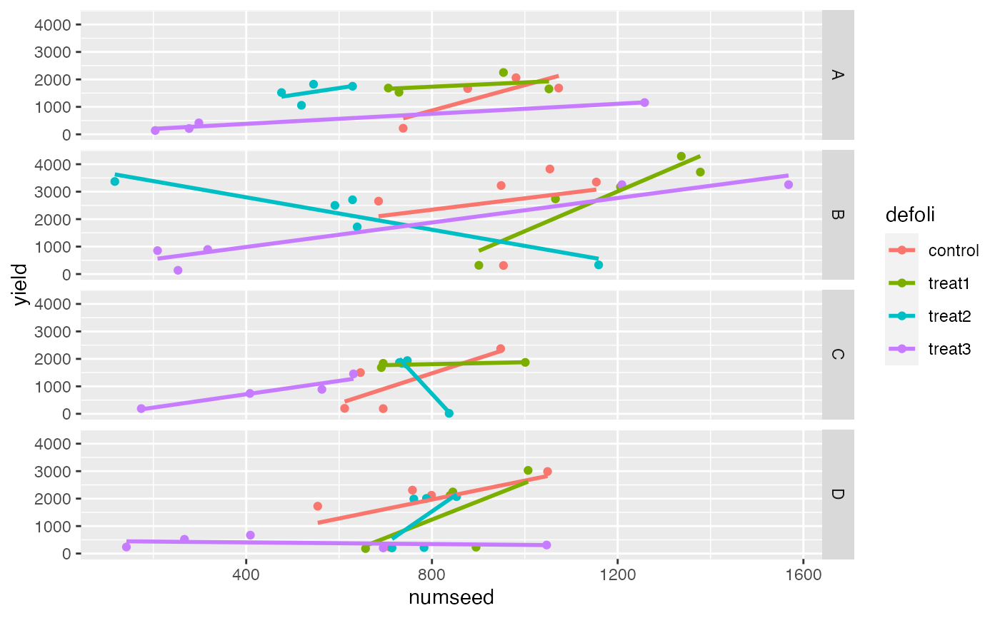

Seventy-two field trials were conducted by applying four defoliation treatments (non-defoliated control, 33%, 66%, and 100%) at different growth stages (stage) ranging from pre-flowering (1) to physiological maturity (5) in four different locations of Navarre, Spain: Carcastillo (1), Melida (2), Murillo (3), and Unciti (4). There are two response variables: yield in kg/ha of the sunflower and numseed, the number of seeds per sunflower head. Data are stored in the data frame SUNFLOWER.
SUNFLOWERA data frame with 72 observations on the following 5 variables:
location (a factor with levels A, B, C, and D for locations Carcastillo, Melida, Murillo, and Unciti, respectively)
stage (a factor with levels stage1, stage2, stage3, stage4, and stage5)
defoli (a factor with levels control, treat1, treat2, and treat3)
yield (sunflower yield in kg/ha)
numseed (number of seeds per sunflower head)
Muro, J., et. al. 2001. “Defoliation Effects on Sunflower Yield Reduction.” Agronomy Journal, 93: 634-637.
Ugarte, M. D., Militino, A. F., and Arnholt, A. T. 2015. Probability and Statistics with R, Second Edition. Chapman & Hall / CRC.
summary(aov(yield ~ stage + defoli + stage:defoli, data = SUNFLOWER))
#> Df Sum Sq Mean Sq F value Pr(>F)
#> stage 4 5186036 1296509 1.267 0.29495
#> defoli 3 13720078 4573359 4.468 0.00726 **
#> stage:defoli 12 16236084 1353007 1.322 0.23500
#> Residuals 52 53224683 1023552
#> ---
#> Signif. codes: 0 ‘***’ 0.001 ‘**’ 0.01 ‘*’ 0.05 ‘.’ 0.1 ‘ ’ 1
ggplot(data = SUNFLOWER, aes(numseed, yield, color = defoli)) + geom_point() +
geom_smooth(method = "lm", se = FALSE) + facet_grid(location ~ .)
#> `geom_smooth()` using formula 'y ~ x'
